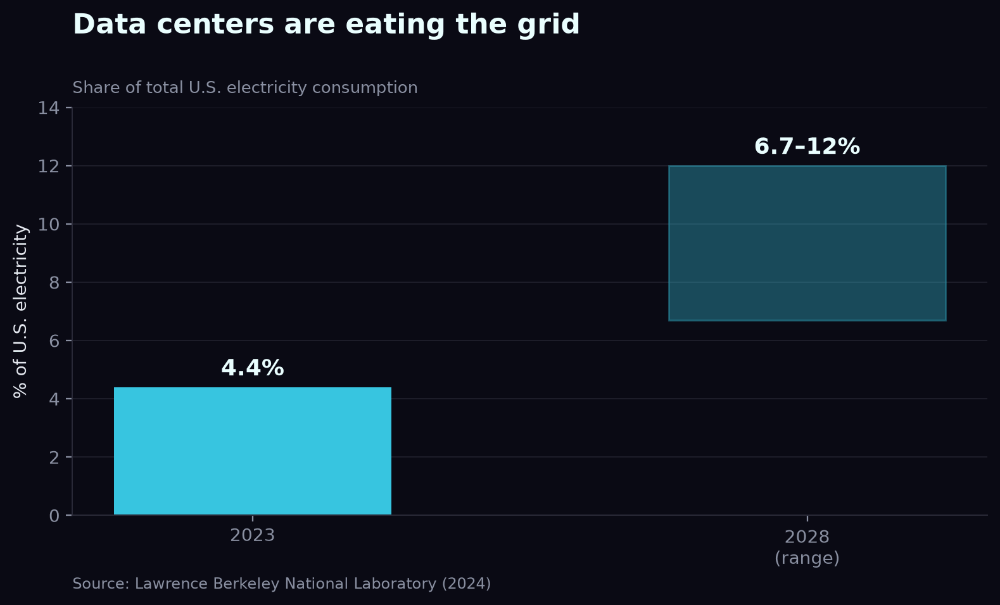
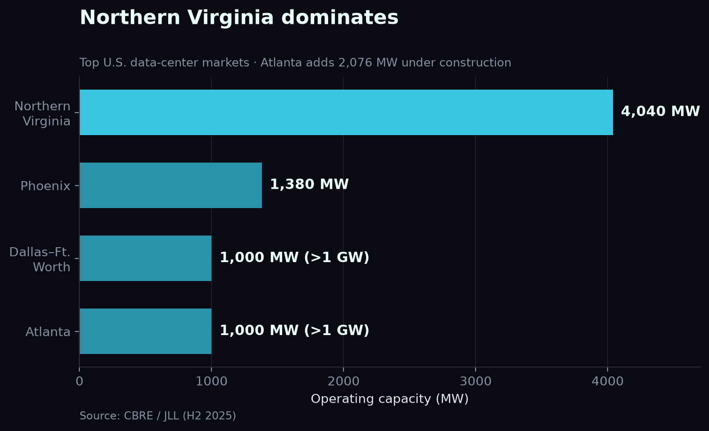
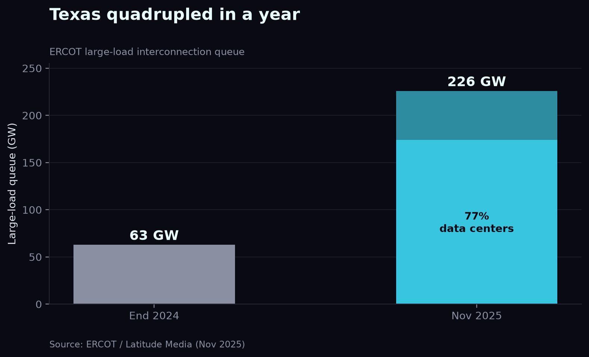
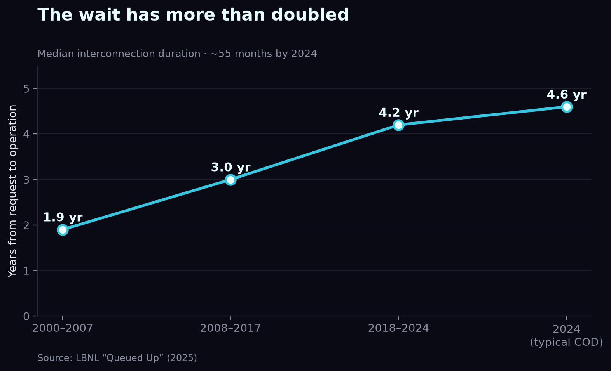
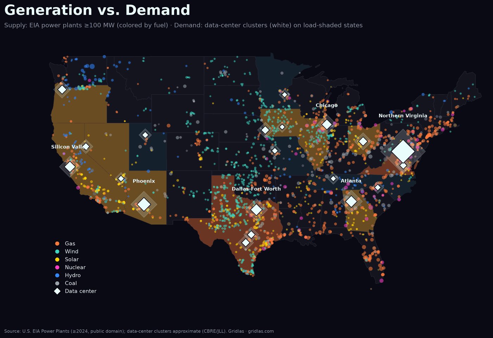

Mapping the U.S. data-center buildout over the power grid
Where AI infrastructure is landing — and the grid bottlenecks standing in the way. Built entirely from public data.
The bottleneck for AI isn't chips — it's electricity, and the years-long wait to connect to the grid. I wanted to see that collision spatially, so I pulled public datasets — EIA for power plants and transmission lines, Lawrence Berkeley National Laboratory's "Queued Up" for interconnection queues, and ERCOT's load reports — and rendered them into maps. Here's what stood out.
1. Data centers are bending a flat demand curve
For two decades U.S. electricity demand was essentially flat — efficiency offset growth. AI broke that. Data centers consumed 4.4% of U.S. electricity in 2023, a share LBNL projects will reach 6.7%–12% by 2028. The load is also concentrated: it lands on specific grids, around the clock, faster than utilities have ever had to respond.

2. The map is concentrating
Plotting every major cluster, one market dwarfs the rest: Northern Virginia, at roughly 4,040 MW, is about 3.5× every secondary U.S. market combined. Dallas–Fort Worth and Atlanta have each crossed a gigawatt; Phoenix and central Ohio are climbing fast.


3. The real bottleneck: the interconnection queue
No market shows the strain like Texas. ERCOT's large-load interconnection queue went from 63 GW at the end of 2024 to ~226 GW by November 2025 — roughly a 4× jump in a year, with about 77% of it data centers aiming to connect by 2030.

But a queue is a wish list, not a build plan. Of that 226 GW, only about 1.8% is actually operational and drawing power — more than half hasn't even submitted enough information to begin review.

Why so little gets through? The wait. Nationally, the median time from interconnection request to commercial operation has more than doubled — from under two years in the 2000s to about 4.5 years for projects reaching operation in 2024.

4. Supply is everywhere; demand isn't
Layering ~2,459 utility-scale power plants (≥100 MW, ~1,089 GW) under the demand picture makes the mismatch clear: generation blankets the country, but data-center load concentrates onto a handful of already-stressed grids. The problem isn't total capacity — it's location and timing.

5. Five markets are carrying most of the load
Zoom back out and the national picture resolves into a short list. Five markets absorb the bulk of the operating load and nearly all of the queue pressure — each for a different reason. I broke each one down separately; the short version:

- Northern Virginia — the anchor. At roughly 4,040 MW operating it's the largest market on earth, and "Data Center Alley" in Loudoun County still sets the pace for the rest.
- Texas (ERCOT) — the pressure gauge. The large-load queue jumped from 63 GW to ~226 GW in a year, about 77% of it data centers — the clearest read on demand outrunning the grid.
- Atlanta & Georgia — the fastest riser in the Southeast, with roughly 2,076 MW in the build pipeline and Georgia Power repeatedly revising its load forecast upward.
- Phoenix & Arizona — the desert cluster, ~1,380 MW across 100+ facilities, trading water and heat constraints for cheap land and fast permitting.
- Central Ohio — the breakout, where single gigawatt-scale campuses are reshaping AEP's planning around New Albany and Columbus.
What ties them together isn't size — it's that each one is asking a single grid to absorb, in a few years, load that used to take a decade to plan for. The full regional breakdown is here.
6. What actually breaks the logjam
If the bottleneck is power and time, every fix is really trying to buy one or the other. Four are moving fastest:
- Skip the queue. Behind-the-meter generation — on-site gas turbines, increasingly fuel cells — lets a campus power up without waiting years for a transmission interconnection. Fast, but it front-loads emissions and moves the fuel question on-site.
- Buy firm, clean baseload. The nuclear revival is real: hyperscalers have signed deals to restart a retired reactor (Three Mile Island, for Microsoft) and to co-locate directly at an existing plant (Talen's Susquehanna, for Amazon), alongside a wave of small-modular-reactor commitments that won't deliver until the 2030s.
- Make the load flexible. A 2025 Duke University (Nicholas Institute) study found the existing grid could absorb on the order of 100 GW of new large load if those loads agreed to curtail power just ~0.5% of the time — pairing data centers with on-site batteries or backup generation turns "we need a new grid" into "use the grid we have, better."
- Get more out of the wires we have. Grid-enhancing technologies and reconductoring raise the capacity of lines already in the ground far faster than new transmission can be permitted. The cheapest megawatt is the one you don't have to build.
Which levers each market actually pulls is where the regional story gets specific: Texas leans on behind-the-meter gas, Virginia and Ohio on utility buildout and flexibility, Phoenix on solar-plus-storage. That's the thread the regional breakdowns and the full report pick up.
7. The money behind the buildout
Demand is one story; the checkbook is another. Pull the four hyperscalers' capital expenditure straight from their 10-K filings and the scale of the bet is unmistakable: combined capex climbed from ~$125B in 2021 to ~$358B in fiscal 2025 — roughly 2.9× in four years. The companies attribute the surge overwhelmingly to AI infrastructure, and every dollar of it eventually needs somewhere to plug in.
Show the data table
| Fiscal year | Amazon | Alphabet | Meta | Microsoft | Total |
|---|---|---|---|---|---|
| FY2021 | $61.0B | $24.6B | $18.6B | $20.6B | $124.9B |
| FY2022 | $63.6B | $31.5B | $31.4B | $23.9B | $150.5B |
| FY2023 | $52.7B | $32.2B | $27.3B | $28.1B | $140.4B |
| FY2024 | $83.0B | $52.5B | $37.3B | $44.5B | $217.3B |
| FY2025 | $131.8B | $91.5B | $69.7B | $64.5B | $357.5B |
That is the capital force behind every map in this report. The spending is committed and still accelerating — which is exactly why the binding constraint has moved downstream, from "will they build?" to "can the grid take it?" The rest of this analysis is what happens when $358B of ambition meets a power system that scales in years.
Methodology & sources
Tools: maps and charts rendered with QGIS and Python (matplotlib) from raw public datasets. No proprietary data.
Sources:
- U.S. EIA — Energy Atlas; "Power Plants in the U.S." and transmission-line feature services (public domain)
- LBNL — 2024 U.S. Data Center Energy Usage Report; "Queued Up" 2025 Edition
- ERCOT — interconnection & load reports (via Latitude Media / Utility Dive)
- CBRE / JLL — North America Data Center reports, H2 2025
- IEA — data-centre electricity analysis, 2025
- Duke University — Nicholas Institute, "Rethinking Load Growth" (2025) — grid load-flexibility headroom
Caveat: data-center cluster locations and capacities are approximate, compiled from public market reports. Generation/transmission/queue figures are from the government/lab sources above. Current as of late 2025.
Frequently asked
How much electricity do U.S. data centers use?
Data centers consumed about 4.4% of U.S. electricity in 2023. Lawrence Berkeley National Laboratory projects that share will reach 6.7% to 12% by 2028, reversing two decades of essentially flat national demand.
Why does it take so long to connect a data center to the power grid?
The wait is the interconnection queue. Nationally, the median time from interconnection request to commercial operation has more than doubled — from under two years in the 2000s to about 4.5 years for projects reaching operation in 2024 — because transmission planning, studies and grid upgrades move far slower than the load wants to arrive.
Which U.S. region has the most data centers?
Northern Virginia is the largest data-center market in the world, at roughly 4,040 MW of operating capacity — about 3.5 times every secondary U.S. market combined. Dallas–Fort Worth, Atlanta, Phoenix and central Ohio follow.
What is the ERCOT interconnection queue?
ERCOT's large-load interconnection queue is the list of big new loads seeking to connect to the Texas grid. It grew from about 63 GW at the end of 2024 to roughly 226 GW by November 2025, with about 77% of it data centers — but only a small fraction is operational, since a queue is a wish list, not a build plan.
Is there enough power for AI data centers?
The problem is location and timing, not total capacity. The U.S. has ample generation nationally, but data-center load concentrates onto a handful of already-stressed grids faster than they can respond. Studies suggest much of the near-term demand could be met by using existing grid capacity more flexibly.
Gridlas · independent & unaffiliated · built from public data.